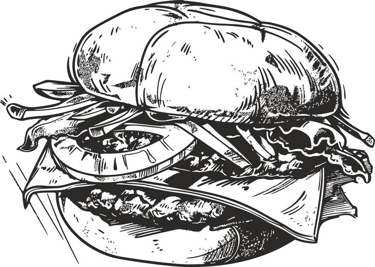

Novel Title 1
Chapter 1: The Awakening
The dawn broke over the jagged peaks of the Iron Mountains, casting a long, crimson shadow across the valley below. Elara stood at the edge of the cliff, the cold wind whipping her hair against her face.
She hadn't slept in three days. The dreams were getting stronger, pulling her toward the ancient ruins that everyone in her village feared. "It's just a story," her father had always said, but the humming in her blood told a different tale.
With a deep breath, she took her first step onto the hidden path. There was no turning back now.
✦ ✦ ✦

Hours later, the sun was high in the sky. The forest was silent, save for the occasional rustle of leaves. Elara reached the stone archway, covered in moss and forgotten symbols. She traced the carvings with her fingertip and felt the stone hum beneath her touch — warm, alive, waiting.